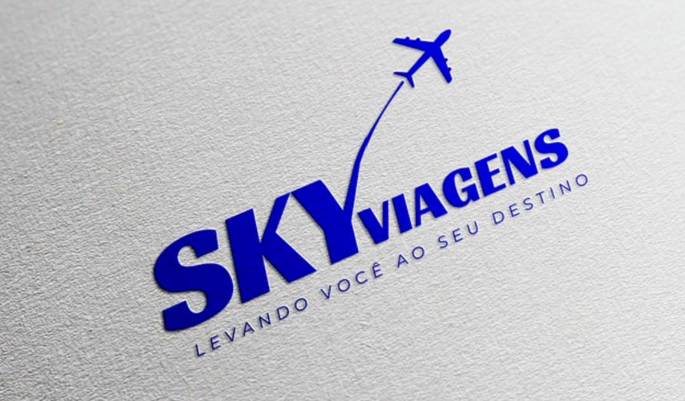

Viagens em promoção pra você conhecer o Brasil e o mundo!
postado 16 de Abril de 2025 A SKAY VIAGENS é uma holding de empresas do ramo de turismo fundada e sediada na Capital Federal em Brasília, no Distrito Federal. A empresa surgiu em 1972 com a fundação da Agência de Viagens SKAY, sendo reestruturada em 2009 quando abriu seu capital e tornou-se uma holding de grande sucesso e expansão. Nos anos seguintes, diversas operadoras turísticas e agência de viagens foram compradas e incluídas ao grupo. Atualmente, a SKAY VIAGENS CORP é a maior operadora de turismo da América Latina com operações e negócios baseados no Brasil e no Exterior.
Leia maisExpansão e fretamentos
postado 16 de Abril de 2025
Em 1983, a SKAY VIAGENS abre suas primeiras agências no Distrito Federal e inicia uma série de parcerias com outras agências de viagem, vendendo seus serviços através destas agências. No final da década de 80 e início dos anos 1990, passou a fretar voos de diversas companhias aéreas para comercialização dentro de seus pacotes de viagem. Em 1998, a CVC inaugura sua primeira agência dentro de um shopping center na Capital Federal em Brasília, dando início a uma fase de expansão e popularização da venda de viagens no varejo. Nos anos 2000, passou a fretar navios da companhia espanhola Pullmantur Cruises para cruzeiros all-inclusive pela costa brasileira e para costa caribenha, espanhola e europeia.
Leia mais